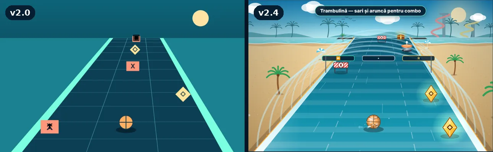
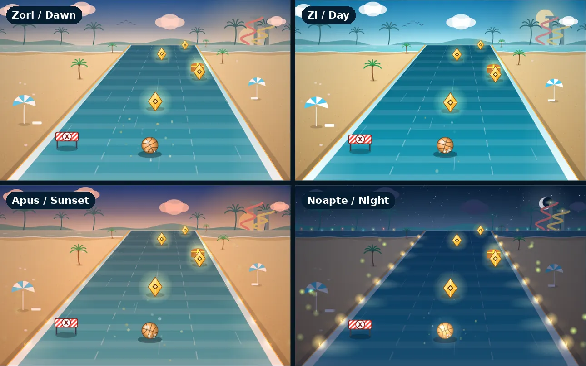
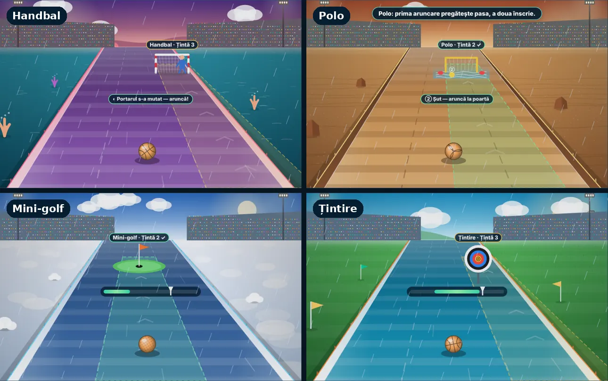
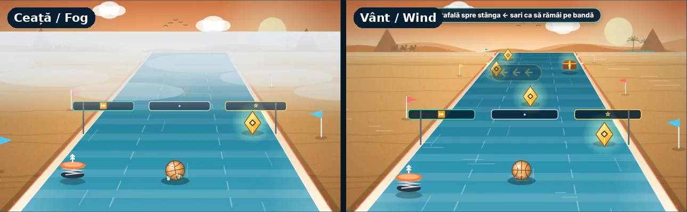
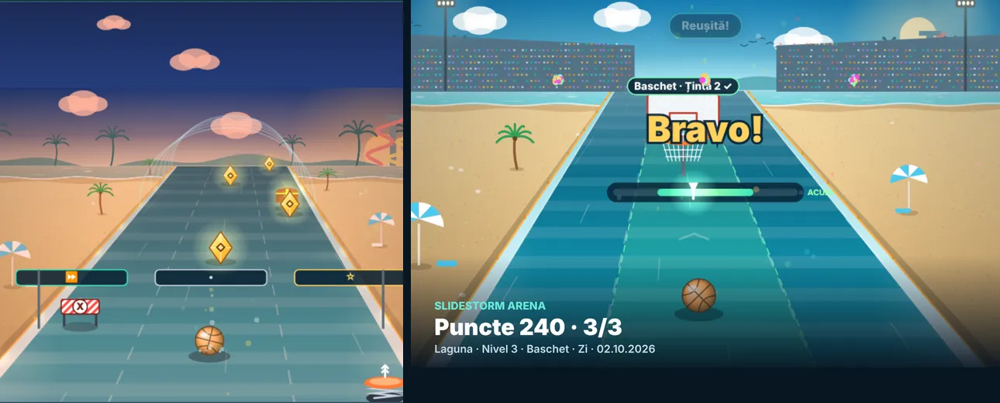

Un parc acvatic sportiv în browser: 100 de niveluri, 8 sporturi și 11 moduri, în română și engleză. Studiul arată cum am trecut de la forme plate la 10 lumi cu zi și noapte, sunet și vreme, în patru versiuni din aceeași zi, fără să modific regulile sau salvările jucătorilor.
Capitolul 1, ziua: nisip, mare la orizont, obiecte desenate care își păstrează simbolurile.
10teme de capitol, fiecare cu decor și repere proprii
25+efecte sonore generate în browser, fără fișiere audio
11moduri verificate cu rezultate identice înainte și după
0modificări în reguli, scoruri sau formatul salvării
Contextul
Versiunea 2.0 avea deja conținutul: 100 de niveluri, 8 sporturi, constructor de trasee, camere online și opțiuni de accesibilitate. Grafica rămăsese însă cea din prima versiune: dreptunghiuri, romburi și simboluri text pe un fundal plat, cu trei palete repetate pe zece capitole. Pe mobil, imaginea se întindea vertical. Voiam ca jocul să arate și să sune ca un parc acvatic, fără să risc nimic din ce funcționa deja.

Aceeași scenă, înainte și după.
Deciziile importante
Grafica și sunetul nu au voie să atingă regulile
Provocarea: logica jocului, salvarea validată și testele erau stabile. O rescriere a desenului putea strica, fără să se vadă, coliziuni, scoruri sau migrarea salvărilor.
Soluția: desenul și sunetul trăiesc în scripturi separate, care doar citesc starea jocului. Rendererul înlocuiește o singură funcție, draw(). Stratul audio ascultă evenimente vizuale și își ține preferințele sub o cheie proprie. Un test automat refuză orice reatribuire a funcțiilor de joc în aceste straturi.
Dovada că nimic nu s-a schimbat
Provocarea: „arată la fel de jucabil” nu e o dovadă.
Soluția: la fiecare versiune am rulat aceleași comenzi pe 11 moduri, în versiunea veche și în cea nouă, și am comparat scorul, reușitele, distanța, banda și starea fiecărui obiect de pe traseu. Rezultatele trebuie să fie identice. Singura excepție sunt regulile noi de vreme din 2.4, care sunt opționale și au testele lor.
Indicatoare fidele regulilor
Provocarea: un indicator desenat „frumos”, dar mai larg decât regula reală, îl păcălește pe jucător.
Soluția: zona verde a fiecărui sport e calculată din aceeași condiție ca aruncarea: sub 0,28 la golf, în jurul centrului la bowling, iar la tir se îngustează după fiecare reușită. Portarul de handbal arată exact faza în care aruncarea trece, iar valul apare pe banda pe care lovește.
Sunet fără fișiere
Provocarea: fișierele audio ar fi crescut dimensiunea, ar fi complicat cache-ul offline și ar fi adus licențe de verificat.
Soluția: toate sunetele sunt sintetizate cu Web Audio din oscilatoare și zgomot filtrat: efecte pentru fiecare acțiune, ambianțe după loc și oră, plus o muzică adaptivă pe capitole care adaugă straturi în arenă. Sunetul pornește doar la cererea jucătorului.
Performanță pe telefoane modeste
Provocarea: prima variantă a noii grafici dubla timpul pe cadru pe un profil de telefon încetinit.
Soluția: am măsurat fiecare strat separat. Fundalul se desenează o dată pe un canvas propriu, care se reîmprospătează doar la schimbarea capitolului sau a orei. Strălucirile sunt sprite-uri din cache, iar calitatea Auto coboară singură. Pe desktop jocul rulează la 60 fps, ca înainte.
Ce am construit

Ciclul zi–noapte: zori, zi, apus, noapte.

Ținte și indicatoare diferite pentru fiecare sport.

Vremea opțională schimbă jocul: ceață și vânt.

Camera adaptată pe mobil și fotografia de final.
Lumi: 10 teme cu repere (turnuri de tobogane, far, mori de vânt, vulcan, roată panoramică), aranjare diferită la fiecare nivel și viață în peisaj.
Traseu: tobogan cu pereți și apă în mișcare; porțiuni în tub transparent, spirală, pod suspendat sau coborâre în pereche; ramificația marcată vizibil.
Vreme: ploaie, furtună, valuri, plus ceață și vânt ca reguli opționale, cu avertisment vizual, text și sunet.
Sunet: efecte, ambianțe și muzică adaptivă, cu volume separate.
Accesibilitate: fiecare obiect are formă și simbol, nu doar culoare. Mișcarea redusă oprește efectele animate, iar contrastul ridicat folosește forme plate.
Testare
Teste automate: logica jocului, salvările (inclusiv migrarea din v1), API-ul camerelor online și verificări pentru straturile de grafică și sunet.
Echivalență: aceleași comenzi pe 11 moduri, cu rezultate identice între versiuni.
Reguli noi: ceața adaugă +5 la energie; vântul anunță direcția corectă și te mută cu o bandă, iar săritura te ține pe loc.
Browser: Chromium headless, fără erori în consolă; capturi pentru toate capitolele, momentele zilei, arene, contrast și ecrane de 390 px, tabletă și landscape; toate efectele sonore redate fără erori.
Ce nu este verificat încă
Sunetul, performanța și controlul tactil nu au fost testate pe telefoane reale. Cititoarele de ecran (TalkBack, VoiceOver) nu au fost încercate cu oameni. Măsurătorile de performanță vin dintr-un profil de telefon simulat, fără GPU, care e mai pesimist decât un dispozitiv real.
Evoluția
2.0
2.2
2.3
2.4
Grafică
Forme plate, 3 palete
10 teme, tobogan 3D, ținte pe sport
Zi–noapte, plajă, repere
Tobogane noi, cameră pe mobil
Sunet
Un bip
Același
Efecte și ambianțe
+ muzică adaptivă
Vreme
Decor
Ploaie, fulgere
Același
+ ceață și vânt opționale
Reguli
—
Neschimbate
Neschimbate
Neschimbate implicit
Ce urmează
Sesiuni pe telefoane reale, pentru sunet, atingere și performanță.
Verificare cu TalkBack și VoiceOver a descrierilor și a avertismentelor de vreme.
Observarea unor jucători reali, ca dificultatea ceții și a vântului să se bazeze pe date.
Case study · Canvas game · Procedural sound
SlideStorm Arena
A browser water-park sports game: 100 levels, eight sports and eleven modes, in Romanian and English. This case study shows how flat shapes became ten worlds with day and night, sound and weather, across four releases in one day, without changing the rules or players’ saves.
Chapter 1 by day: sand, sea on the horizon and drawn objects that keep their symbols.
10chapter themes, each with its own scenery and landmarks
25+sound effects generated in the browser, no audio files
11modes checked for identical results before and after
0changes to rules, scores or the save format
Context
Version 2.0 already had the content: 100 levels, eight sports, a route builder, online rooms and accessibility options. The graphics were still those of the first release: rectangles, diamonds and text symbols on a flat background, with three palettes repeated across ten chapters. On phones the picture stretched vertically. I wanted the game to look and sound like a water park without risking anything that already worked.
The same scene, before and after.
Key decisions
Graphics and sound may not touch the rules
Challenge: the game logic, validated save and tests were stable. Rewriting the drawing code could quietly break collisions, scores or save migration.
Solution: drawing and sound live in separate scripts that only read game state. The renderer replaces a single function, draw(). The audio layer listens to visual events and keeps its preferences under its own key. An automated test rejects any reassignment of game functions in these layers.
Proof that nothing changed
Challenge: “it still plays the same” is not evidence.
Solution: for every release I ran the same inputs through 11 modes in the old and new versions and compared score, goals, distance, lane and the state of every route object. They have to match exactly. The only exception is the optional weather rules in 2.4, which have their own tests.
Meters that match the rules
Challenge: a meter drawn “nicely” but wider than the real rule misleads the player.
Solution: each sport’s green zone is computed from the same condition as the throw: below 0.28 for golf, around the centre for bowling, and narrowing after each target hit. The handball keeper shows exactly when the shot will pass, and the wave appears on the lane it hits.
Sound without files
Challenge: audio files would add size, complicate the offline cache and bring licences to check.
Solution: every sound is synthesised with Web Audio from oscillators and filtered noise: effects for each action, ambiences by place and time of day, and adaptive per-chapter music that adds layers in the arena. Sound only starts when the player turns it on.
Performance on modest phones
Challenge: the first version of the new graphics doubled frame time on a throttled phone profile.
Solution: I measured each layer separately. The background is painted once onto its own canvas and only refreshed when the chapter or time of day changes. Glows are cached sprites, and Auto quality steps down by itself. Desktop still runs at 60 fps, as before.
What I built
The day–night cycle: dawn, day, sunset, night.Different targets and meters for every sport.
Optional weather that changes play: fog and wind.The adaptive mobile camera and the finish photo.
Worlds: 10 themes with landmarks (slide towers, lighthouse, windmills, volcano, Ferris wheel), a different layout for every level and a living landscape.
Route: a walled slide with flowing water; transparent tube, spiral, suspended bridge or twin descent stretches; a clearly marked fork.
Weather: rain, storm and waves, plus fog and wind as optional rules, each announced visually, in text and with sound.
Sound: effects, ambiences and adaptive music with separate volumes.
Accessibility: every object has a shape and a symbol, not just a colour. Reduced motion turns animated effects off, and high contrast uses flat shapes.
Testing
Automated tests: game logic, saves (including v1 migration), the online rooms API, and checks for the graphics and sound layers.
Equivalence: the same inputs through 11 modes give identical results across releases.
New rules: fog adds +5 per energy; wind announces the right direction and pushes one lane, and jumping holds the lane.
Browser: headless Chromium with no console errors; screenshots of every chapter, time of day, arena, high contrast, and 390 px, tablet and landscape screens; every sound effect plays without errors.
What is not verified yet
Sound, performance and touch control have not been tested on real phones. Screen readers (TalkBack, VoiceOver) have not been tried with people. Performance figures come from a simulated phone profile without a GPU, which is more pessimistic than a real device.
How it evolved
2.0
2.2
2.3
2.4
Graphics
Flat shapes, 3 palettes
10 themes, 3D slide, per-sport targets
Day–night, beach, landmarks
New slide stretches, mobile camera
Sound
One beep
Same
Effects and ambiences
+ adaptive music
Weather
Decoration
Rain, lightning
Same
+ optional fog and wind
Rules
—
Unchanged
Unchanged
Unchanged by default
What’s next
Sessions on real phones for sound, touch and performance.
Checking descriptions and weather warnings with TalkBack and VoiceOver.
Watching real players, so fog and wind difficulty rests on evidence.